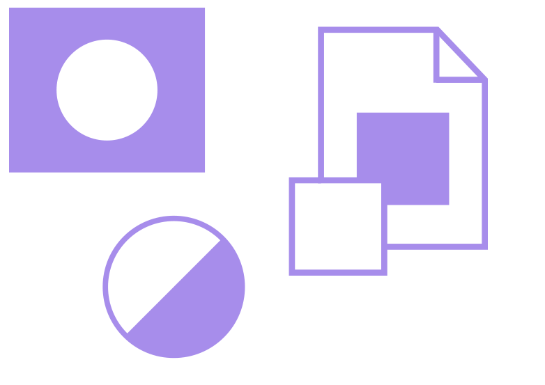
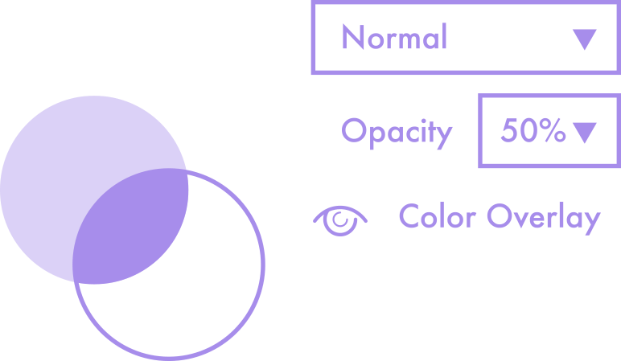
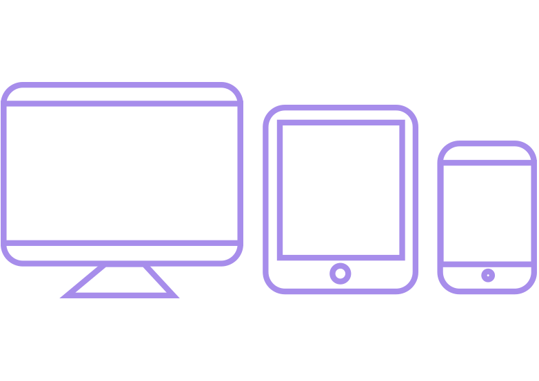
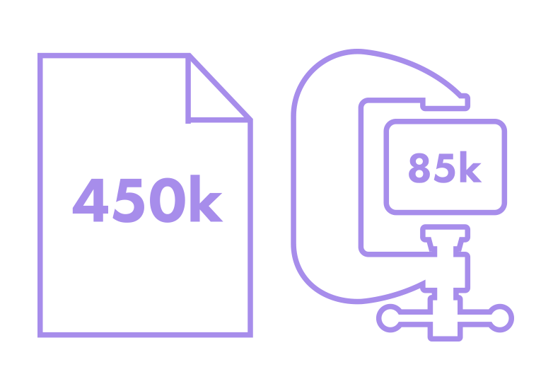
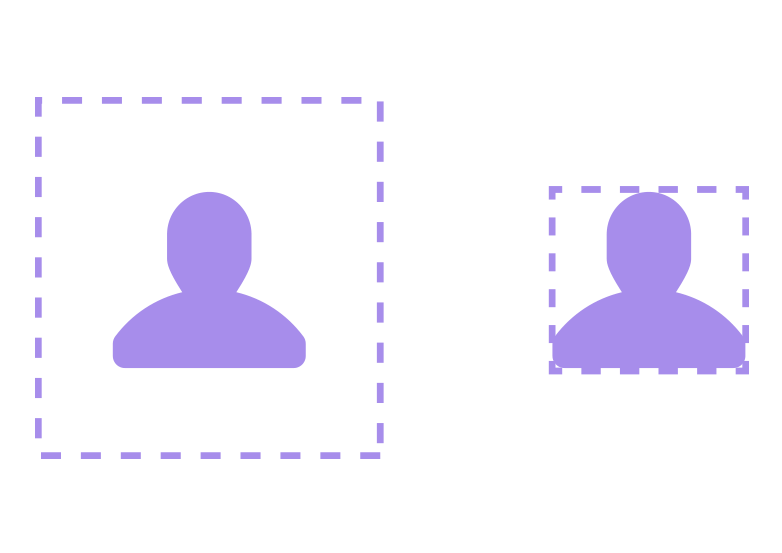
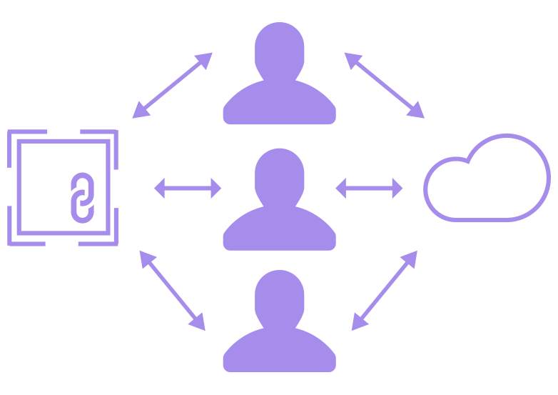

切图 输出切图是使用Photoshop来工作的关键，一定要仔细检查所有导出的素材文件的大小和格式等。 最好让图片无损 使用蒙版、智能对象和调整图层以避免直接删除素材的像素。  谨慎使用混合模式 那个颜色是怎么来的？ 别告诉我你用了两层叠加，4个副本和16个颜色的渐变混合的啊?i  谨慎使用混合模式 最好要能够直接从一个图层的属性中提取十六进制色值。 注意屏幕分辨率和透明度 网站上Logo如果是模糊的, 那这都是你的错。i  注意屏幕分辨率和透明度 一倍切图在两倍的Retina视网膜屏幕上像素太低出现模糊，这种情况需要通过导出独立于分辨率的格式，如 SVG 或多个版本的切图 (@2x、@3x 等)。 压缩切图 使用 "文件>导出>存储为Web所用格式" 导出切图。i  压缩切图 没有压缩的图像占用更多内存，较大的图像需要更多的时间加载。用 Photoshop 导出切图之后，需要再次压缩你的切图文件（例如：www.tinypng.com）。 切图不要有空白填充区域 不用给切图加上额外的边距或透明填充。这些是 CSS 来做的。i  切图不要有空白填充区域 CSS 是非常擅长于调整定位的，图片如果有空白的填充区域会让前端宝宝抓狂的。 团队协作 新版ps更加注重团队协作，使用 CC 库和链接的智能对象一起工作非常高效。i  团队协作 使用链接的智能对象, 可以将规范文件或样式库分配给不同的设计师。然后你的 PSD 更新自动库就好。